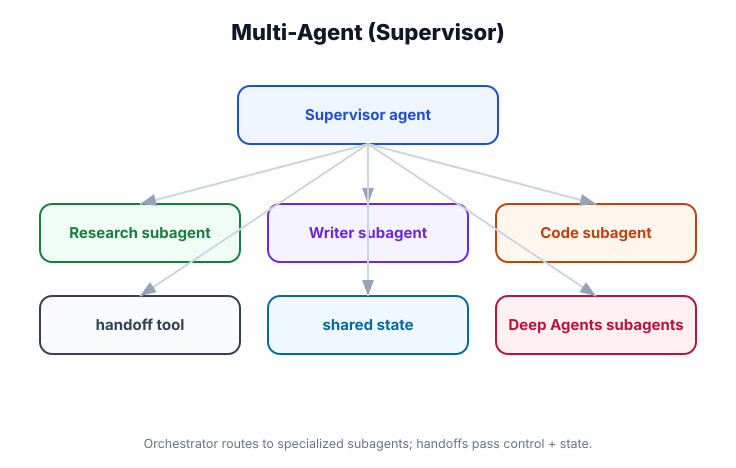

Multi-Agent Systems — Supervisors, Subagents & Handoffs
What you'll learn: How to compose multiple specialized agents into a single system — a supervisor agent that routes tasks, subagents that execute them, and how agents communicate via tool calls and handoffs using the Command return type.

↗ Open full size · ⬇ Edit in Excalidraw — labels use real LangChain classes.
A customer inquiry hits the front desk (supervisor). The receptionist decides whether it's a billing question (→ Finance dept) or a technical issue (→ Support dept). Each department has its own specialists, tools, and knowledge. The customer talks to one company, but their request is routed to the right expert behind the scenes. That's a multi-agent system: one entry point, multiple specialized workers.
Three Multi-Agent Patterns
| Pattern | How it works | When to use |
|---|---|---|
| Supervisor + Subagents | One orchestrator agent routes requests to specialist agents via tool calls. The orchestrator decides who runs. | Tasks that need routing logic — different departments, domains, or expertise levels. |
| Handoff Chain | Agent A calls Agent B as a tool. Agent B's result flows back to Agent A which summarizes and responds. | Sequential pipelines — research then write, extract then analyze. |
| Parallel Subagents | Supervisor dispatches multiple agents concurrently via asyncio.gather(). Waits for all results. |
Independent tasks that can run simultaneously — faster for data gathering. |
Architecture: Interactive Supervisor Diagram
Building the Supervisor + Subagent System
from langchain.agents import create_agent
from langchain.chat_models import init_chat_model
from langchain.tools import tool
from langchain_core.messages import HumanMessage
import asyncio
# ── 1. Build specialist subagents ──────────────────────────────────────────────
research_agent = create_agent(
model=init_chat_model("openai:gpt-4o-mini"),
tools=[web_search, fetch_url, summarize],
name="research_agent",
system_prompt="You are a research specialist. Search the web and summarize findings concisely.",
)
code_agent = create_agent(
model=init_chat_model("openai:gpt-4o"), # better model for coding
tools=[write_file, run_python, run_tests],
name="code_agent",
system_prompt="You are a Python expert. Write clean, tested code.",
)
data_agent = create_agent(
model=init_chat_model("openai:gpt-4o-mini"),
tools=[run_sql, make_chart, export_csv],
name="data_agent",
system_prompt="You are a data analyst. Query databases and visualize results.",
)
# ── 2. Wrap each subagent as a callable tool ───────────────────────────────────
@tool
async def delegate_to_research(task: str) -> str:
"""Delegate a research or information-gathering task to the research agent.
Args:
task: The specific research task to perform.
"""
result = await research_agent.ainvoke(
{"messages": [HumanMessage(task)]}
)
return result["messages"][-1].content
@tool
async def delegate_to_code(task: str) -> str:
"""Delegate a coding, scripting, or software task to the code agent.
Args:
task: The specific coding task to perform.
"""
result = await code_agent.ainvoke(
{"messages": [HumanMessage(task)]}
)
return result["messages"][-1].content
@tool
async def delegate_to_data(task: str) -> str:
"""Delegate a data analysis, SQL query, or visualization task to the data agent.
Args:
task: The specific data task to perform.
"""
result = await data_agent.ainvoke(
{"messages": [HumanMessage(task)]}
)
return result["messages"][-1].content
# ── 3. Create the supervisor ───────────────────────────────────────────────────
supervisor = create_agent(
model=init_chat_model("openai:gpt-4o"),
tools=[delegate_to_research, delegate_to_code, delegate_to_data],
name="supervisor",
system_prompt="""You are an AI project manager. Analyze user requests and delegate to the right specialist:
- Research questions → delegate_to_research
- Coding tasks → delegate_to_code
- Data/analytics tasks → delegate_to_data
Synthesize results and respond clearly to the user.""",
)
# ── 4. Use it like any other agent ────────────────────────────────────────────
async def main():
result = await supervisor.ainvoke({
"messages": [HumanMessage(
"Research the latest Python async frameworks and write a benchmark script for the top 3"
)]
})
print(result["messages"][-1].content)
asyncio.run(main())Parallel Subagent Dispatch
import asyncio
from langchain_core.messages import HumanMessage
# Dispatch all three agents concurrently — no waiting for each to finish
async def parallel_research(topic: str) -> dict:
"""Fan out to multiple agents at the same time."""
research_task = research_agent.ainvoke(
{"messages": [HumanMessage(f"Research: {topic}")]}
)
data_task = data_agent.ainvoke(
{"messages": [HumanMessage(f"Find statistics and data about: {topic}")]}
)
# Both agents run concurrently
research_result, data_result = await asyncio.gather(research_task, data_task)
return {
"research": research_result["messages"][-1].content,
"data": data_result["messages"][-1].content,
}
# Supervisor tool that runs parallel dispatch
@tool
async def parallel_deep_research(topic: str) -> str:
"""Research a topic in parallel across multiple sources.
Args:
topic: The topic to research from multiple angles simultaneously.
"""
results = await parallel_research(topic)
return f"Research findings:\n{results['research']}\n\nData & statistics:\n{results['data']}"Passing Context Through the Agent Network
from pydantic import BaseModel
# Define shared context that threads through all agents
class WorkspaceContext(BaseModel):
user_id: str
project_id: str
permissions: list[str]
# Each subagent also uses context_schema
research_agent = create_agent(
model=init_chat_model("openai:gpt-4o-mini"),
tools=[web_search],
context_schema=WorkspaceContext,
name="research_agent",
)
# Supervisor passes its own context down to subagents
@tool
async def delegate_to_research(task: str, runtime) -> str:
"""Delegate a research task.
Args:
task: The research task.
"""
ctx = runtime.context # WorkspaceContext from the supervisor's caller
result = await research_agent.ainvoke(
{"messages": [HumanMessage(task)]},
config={
"configurable": {
"context": ctx.dict() # Forward the same context downstream
}
}
)
return result["messages"][-1].content
# Context flows: User Request → Supervisor context → Subagent context → ToolsEach subagent maintains its own conversation history — it doesn't automatically see the supervisor's history. If a subagent needs background context (e.g., "the user wants this for a Python 3.11 project"), pass it explicitly in the task string. Don't assume subagents share memory with the supervisor unless you explicitly share a checkpointer thread_id, which creates coupling you usually don't want.
📰 AI Content Studio
A content platform uses a supervisor that receives article briefs. It fans out: a Research Agent pulls current facts and statistics, a Data Agent queries internal analytics (what performs well, trending topics), and a Code Agent generates interactive chart embed snippets. The supervisor synthesizes all three outputs into a complete article draft. What might take a single agent 10+ LLM calls and 3+ minutes completes in ~45 seconds via parallel dispatch. The user gets a richer output than any single agent could produce.
Subagents are just regular agents wrapped as @tool functions. The supervisor is a regular agent that calls these tools. Use asyncio.gather() for parallel dispatch. Pass context explicitly via the task description or by forwarding runtime.context. Each subagent's history is isolated unless you explicitly share thread_ids. Give each agent a name= parameter — it improves tracing in LangSmith and error messages.